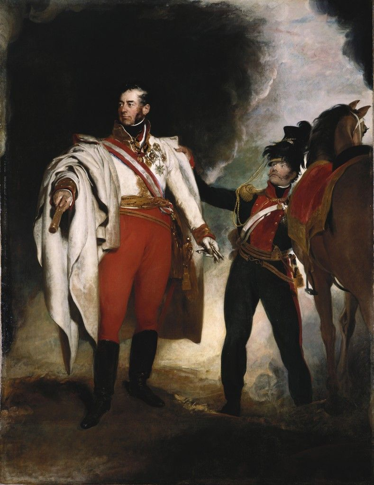
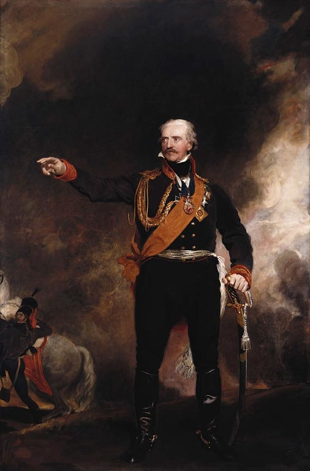
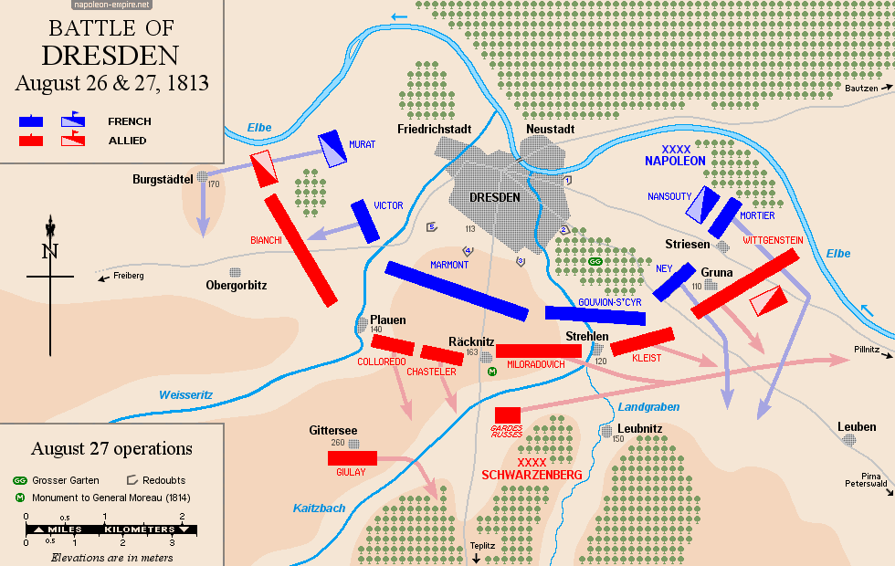

라이프치히로 가는 길 (20) - 나폴레옹의 산수
게시: 2025-03-17T06:30:13+09:00
동쪽 바우첸 일대에서 대치 중이던 블뤼허가 난데 없이 전군을 이끌고 북쪽 바르텐부르크에 나타났다는 것은 뜻하는 바가 뻔했습니다. 바로 베르나도트와 합류하겠다는 것이었지요. 그리고 이제 막 남쪽 보헤미아 방면군이 얼츠거비어거 산맥을 넘어 켐니츠 남서쪽 방면에 나타나기 시작했다는 것은 그 의미가 더 할 나위 없이 분명했습니다. 연합군은 남쪽과 북쪽에서 일제히 움직여 라이프치히에서 합류하려는 것이었습니다. 흩어져 있던 연합군의 3개 방면군들이 하나로 합쳐지는 것은 반드시 막아야 할 일이었고, 나폴레옹이 위기에 봉착한 것이라고 할 수 있었습니다. 하지만 나폴레옹은 연합군의 의도를 파악하자 너무나 기뻐했습니다. 드디어 앞이 보이지 않던 외통수에서 벗어날 기회가 나타났기 때문이었습니다. 8월 27일 드레스덴 전투 이후 나폴레옹은 사실상 무기력하게 수세에 몰려 있었고, 그 이유는 수적으로 우세한 연합군에 맞서기 위해 그가 내선이동의 장점에 의존하기로 한 결정 때문이었습니다. 삼면이 포위된 상태에서의 내선이동은 본질적으로 능동적인 장창이라기보다는 수동적인 덫에 가까운 무기였습니다. 적군이 3면에서 일제히 쳐들어오면 더 짧은 이동거리를 활용하여 셋 중 하나를 재빨리 먼저 때려눕힌 뒤 나머지 둘도 하나씩 격파하는 것이 내선이동을 이용한 전법이었는데, 이 전법이 먹히려면 이 3개 방면군이 먼저 공격을 해야와 했습니다. 반대로 수비만 하고 있는 3개 방면군 중 어느 하나를 나폴레옹이 먼저 공격하려다가는 나머지 2개 방면군이 나폴레옹의 측면과 후면을 공격하는 것에 시달리게 되었습니다. 나폴레옹은 직접 블뤼허와 슈바르첸베르크를 각각 공격해보았으나, 모두 다른 쪽에서 즉각 덤벼드는 바람에 곧 추격을 포기하고 다시 드레스덴으로 되돌아와야 했습니다. 그런데 이제 블뤼허와 베르나도트가 하나로 합친다는 것은 상대해야 할 적이 셋에서 둘로 줄어든다는 뜻이었고, 특히 더 좋은 것은 이들이 라이프치히로 굴러들어오고 있다는 것이었습니다. 이때 북쪽의 블뤼허-베르나도트든 남쪽의 슈바르첸베르크든 나폴레옹이 재빨리 어느 한쪽을 덮쳐서 박살낼 수 있다면, 그 다음에 군을 돌려 여유있게 나머지 하나를 때려눕힐 수 있었습니다. 비록 그의 그랑다르메는 연이은 패배와 식량 부족으로 사기가 떨어지고 탈영병과 환자가 급증하는 상황이었지만, 여기서 딱 1번의 대승을 거둔다면 그 모든 곤경을 단 한 번에 해결해줄 수 있었습니다. 긴 터널 속에 갇혀 있던 나폴레옹에게는 드디어 터널의 끝이 보이는 듯 했습니다. 하지만 나폴레옹의 이런 핑크빛 상상을 현실로 만드는 것은 쉽지 않은 일이었습니다. 무엇보다, 그게 되려면 그랑다르메가 연합군보다 훨씬 더 빨리 움직여야 했는데, 그랑다르메 병사들이나 연합군이나 모두 평범한 사람이었으니 원칙적으로 걷는 행군 속도는 엇비슷했습니다. 만약 나폴레옹이 연합군 하나의 멱살을 쥐고 뒹굴고 있을 때 등 뒤에서 다른 연합군이 나타난다면 나폴레옹은 회복 불가능 수준의 패배를 겪을 수 있었습니다. 따라서 나폴레옹이 1개 연합군을 패배시킬 때까지 나머지 1개 연합군을 어떻게든 막아내며 발목을 붙잡아줄 견제 병력이 필요했습니다. 여기서 나폴레옹은 산수에 돌입합니다. 프랑스의 어린 십대 소년병들을 끌고 오고 있는 오쥬로의 제9군단까지 합한다면, 그랑다르메는 약 27만의 병력에 851문의 대포로 이루어져 있었습니다. 하지만 당장 토르가우와 라이프치히, 드레스덴 일대의 병력만 생각한다면, 나폴레옹이 만들어낼 수 있는 조합은 다음 두 가지였습니다. 1번안) 네에게 9만의 병력을 주고 블뤼허-베르나도트의 14만을 막게 한 뒤 나폴레옹은 18만 병력으로 슈바르첸베르크의 18만을 공격
2번안) 뮈라에게 7만의 병력을 주고 슈바르첸베르크의 18만을 막게 한 뒤 나폴레옹은 20만 병력으로 블뤼허-베르나도트의 14만을 공격

(이 그림은 영국 궁정 화가 토마스 로렌스(Sir Thomas Lawrence) 경이 1819년 빈(Wien) 회의에 출장까지 가서 그린 슈바르첸베르크의 초상화입니다. 슈바르첸베르크는 원래 비대한 편이었는데 이 그림을 보면 이미 1819년에는 대머리까지 상당히 진행되었던 모양입니다. 이 초상화는 당시 영국 조지 4세가 800 기니(guinea)를 주고 주문한 것인데, 지금 금 가격으로 계산해보면 대략 8억원 정도의 금액입니다. 이 그림은 지금 영국 윈저궁의 워털루실(Waterloo Chamber)에 걸려 있습니다.)

(이 그림도 토마스 로렌스 경이 그린 블뤼허의 초상화로서, 역시 같은 워털루실에 걸려 있습니다. 이 그림도 조지 4세가 주문한 것인데, 다만 이 그림은 1819년 빈 회의에 현지 출장 가서 그린 것이 아니라 1814년 블뤼허가 런던을 방문했을 때 그린 것이고, 또 그림 주문가도 슈바르첸베르크 초상화의 절반 가격인 400 기니에 불과했습니다. 그래서인지, 혹은 가격표를 먼저 보고 그림을 봐서인지, 슈바르첸베르크의 초상화에 비해 그림 질이 좀 떨어지는 것 같기도 합니다. 실은 그림 크기도 슈바르첸베르크 초상화는 315cm x 243cm이고, 블뤼허 초상화는 더 작은 271cm x 179cm입니다.) 단순한 숫자로만 보면 아무래도 1번안이 더 성공 확률이 높은 것처럼 보입니다만, 언제나 그렇듯이 나폴레옹에게 있어서 병력의 숫자보다 더 중요한 것은 시간과 거리였습니다. 블뤼허와 베르나도트는 이미 바트 뒤벤까지 진출한 상황이었으므로, 라이프치히에서 불과 3일 행군거리에 온 셈이었습니다. 그에 비해 슈바르첸베르크는 이제 막 얼츠거비어거 산맥을 넘기 시작한 상황이라서, 전통적으로 느리기 짝이 없던 오스트리아군이 언제까지 기다려야 작센의 평야에 집결할 수 있을지 알 수 없었습니다. 나폴레옹은 쉽게 결정을 내릴 수 있었습니다.

(기억들 하시겠습니다만, 8월 27일 드레스덴 전투에서의 패배도 오스트리아군의 행군이 너무나도 느렸기 때문에 벌어진 일이라고 할 수 있습니다. 하루만 더 일찍 도착하여 공격을 시작했다면 드레스덴은 함락될 수도 있었습니다.) 그는 뮈라에게 명령서를 보내 켐니츠와 프라이베르크 일대의 병력을 이끌고 어떻게든 슈바르첸베르크를 틀어 막으라고 지시합니다. 이제 남은 것은 남은 전군을 이끌고 라이프치히로 죽어라 달리는 것 뿐이었을까요? 아니었습니다. 드레스덴 전투 전후하여 나폴레옹은 블뤼허를 먼저 제거하겠다면서 바우첸 방향으로 직접 몇 번이나 진격했었지만 약삭바른 블뤼허는 언제나 잡힐 듯 잡힐 듯 하면서도 용케 그의 손아귀에서 빠져나갔습니다. 흔히 블뤼허를 객기만 가득할 뿐 머리 속에 든 것이 없는 늙은 경기병이라고 비하하지만, 블뤼허는 정말 충직하게 트라헨베르크 의정서의 정신을 지켜 결코 나폴레옹과 1대1로 정면대결을 벌이는 만용을 부리지 않았습니다. 만약 이번에도 나폴레옹이 달려온다는 소식을 듣고 블뤼허가 엘베강을 건너 다시 도망가버리면 모든 꿈이 사라지는 것이었습니다. 아니, 오히려 나폴레옹이 자리를 비운 사이, 부족한 병력으로 힘겹게 슈바르첸베르크를 상대해야 했던 뮈라만 참패를 당하는 결과를 낳을 수도 있었습니다. 나폴레옹이 괜히 천재라고 불리는 것이 아니었습니다. 그는 블뤼허를 이번에는 완전히 제거할 목적으로 함정을 하나 더 준비했습니다. 그게 무엇이었을까요? Source : The Life of Napoleon Bonaparte, by William Milligan Sloane Napoleon and the Struggle for Germany, by Leggiere, Michael V With Napoleon's Guns by Colonel Jean-Nicolas-Auguste Noël https://www.britannica.com/event/Napoleonic-Wars/Dispositions-for-the-autumn-campaign https://www.napoleon.org/en/history-of-the-two-empires/timelines/1813-and-the-lead-up-to-the-battle-of-leipzig/ http://www.historyofwar.org/articles/campaign_leipzig.html https://www.rct.uk/collection/search#/8/collection/405139/charles-philip-prince-schwarzenberg-1771-1820 https://en.wikipedia.org/wiki/Portrait_of_Marshal_Bl%C3%BCcher https://www.napoleon-empire.org/en/battles/dresden.php